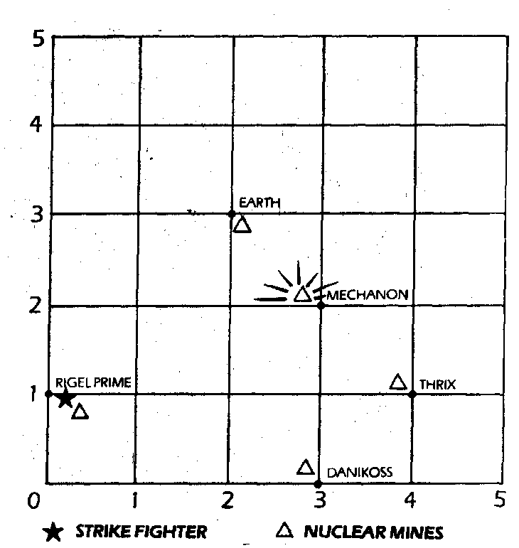

225
Well done. You arrive at the point on the grid which corresponds to a Timehole on Rigel Prime. The display on your faceplate shows that the mine at Mechanon has exploded and died away. The other mines are about to explode at the other Timehole points on the grid. You must engage your Variac Drive again to avoid the last mine which is racing towards you. Which coordinates will you type into your console?
Clyss
| Mechanon | Turn to 251 |
| Danikos | Turn to 264 |
| Earth | Turn to 240 |
| 0/ 4/ 1 0/ 3/ 2 0/ 3/ 0 0/ 2/ 3 | Turn to 211 |